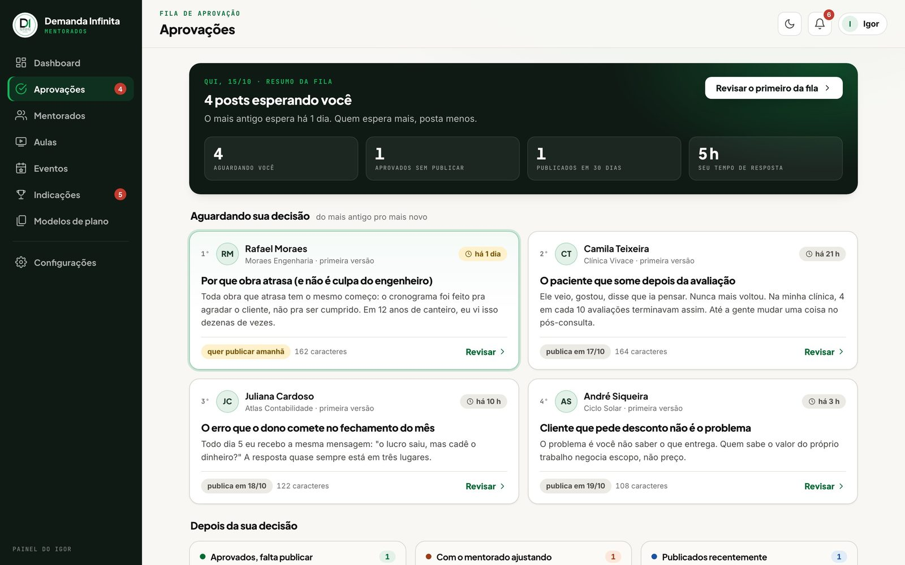
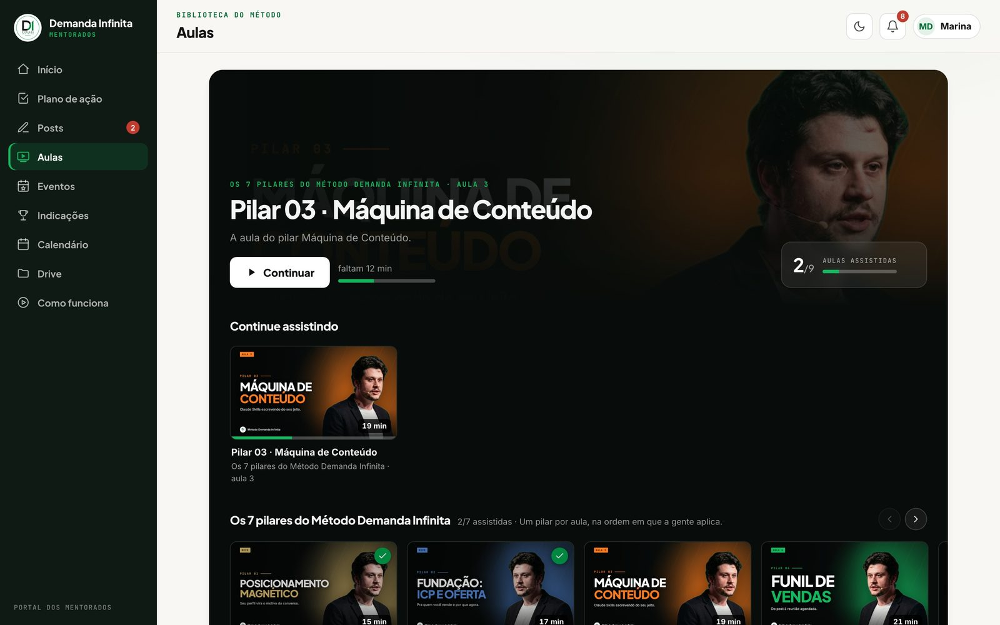
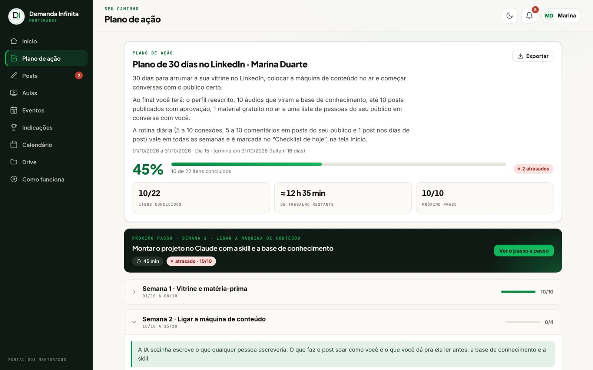
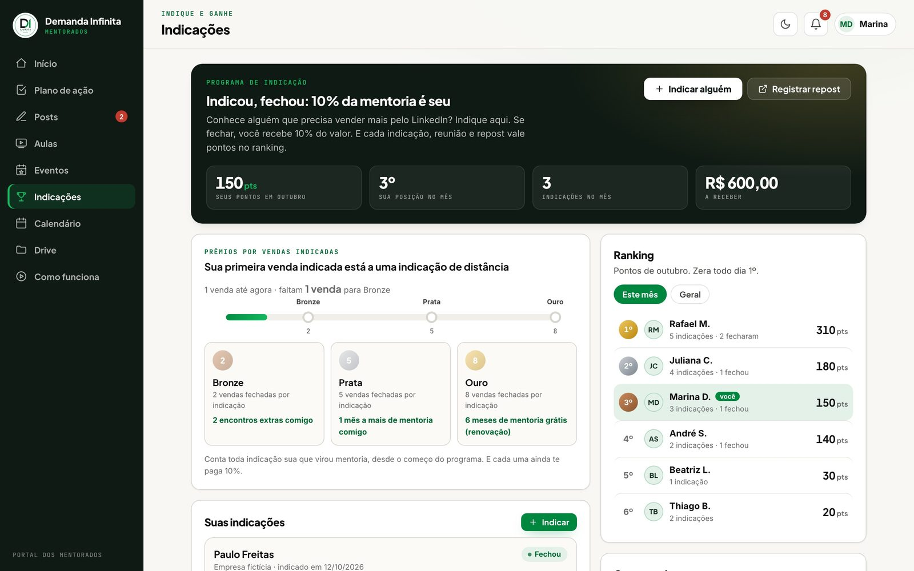

Sua área de membros vira uma Netflix, feita com o Claude
O passo a passo e os prompts pra montar o portal da sua mentoria ou do seu curso: aulas em fila, plano de ação, aprovação de post e programa de indicação com prêmio. Sem programar.
Material do vídeo · passo a passo
No vídeo eu mostrei o portal dos meus mentorados. Antes dele, tudo vivia no WhatsApp e no Drive: material que se perdia na conversa, aluno sem saber o próximo passo, aluno que sumia por duas semanas e eu cobrando um por um. Aqui está o caminho, na ordem, com o prompt de cada etapa pra você copiar, trocar os colchetes e colar no Claude.
A regra que guia tudo: não adianta criar um sistema com tudo dentro se o aluno não tem um motivo pra abrir.
O início do portal, do lado do aluno: o plano, a semana e o que fazer hoje. Ilustração com dados fictícios.
As peças, em linguagem simples
Banco de dados
O caderno onde ficam alunos, aulas, tarefas e posts.
Painel
A tela que o aluno abre no celular ou no computador.
Claude Code
Quem constrói. Você descreve e aprova.
O cofre
Login e a regra de que cada aluno só vê o que é dele.
Endereço
Onde o portal fica no ar, com senha.
O sino
O aviso de que o post foi aprovado ou pede ajuste.
Etapa 00Comece pelo motivo pra abrir, não pela tela
Antes de pensar em tela, pense no motivo. A pergunta é: o que o seu aluno já precisa fazer toda semana? Coloque o seu sistema no meio desse caminho. Assim ele abre porque precisa, não porque você pediu.
No meu caso, todo mentorado precisa produzir conteúdo no LinkedIn, e antes de postar ele quer a minha aprovação. A aprovação virou a porta de entrada do portal.
Folha do motivo · preencha antes de tudo
O MOTIVO PRA ABRIR O PORTAL
1. O que o meu aluno já precisa fazer toda semana? [ex.: postar no LinkedIn]
2. O que ele precisa de mim pra fazer isso? [ex.: a minha aprovação antes de publicar]
3. O que hoje se perde ou trava no WhatsApp e no Drive? [...]
4. Onde eu perco tempo cobrando aluno um por um? [...]
5. O que eu quero ver de uma vez, sem perguntar pra ninguém? [...]
Meu negócio: [mentoria / curso / comunidade de ___]
Quantos alunos: [___]
O que já existe hoje (aulas gravadas, planilhas, materiais): [...]
Etapa 01A base: banco, login e painel
No Claude Code, abra uma pasta nova chamada meu-portal e ligue o Plan Mode (Shift + Tab até aparecer "plan mode"). Nesse modo ele planeja e pergunta antes de criar qualquer coisa.
Prompt 1 · o briefing do portal
Quero criar o portal dos meus alunos. Antes de criar qualquer arquivo, leia a minha folha do motivo abaixo, me faça as perguntas que faltam e proponha um plano.
[cole aqui a sua folha do motivo]
Tecnologia:
- Banco e login: Supabase (plano gratuito)
- Painel: uma página só, publicada no GitHub Pages
- Entra só quem eu convidar, com e-mail e senha; sem cadastro aberto
- Dois tipos de acesso: aluno e eu (administrador)
Me entregue:
1. As perguntas que faltam
2. As tabelas (alunos, aulas, progresso nas aulas, planos e tarefas, posts e aprovações, indicações, avisos) explicadas em português simples
3. As telas do aluno (início, plano de ação, posts, aulas, indicações) e as do meu lado
4. Os riscos de segurança e como você evita cada um
Por trás: o Claude monta a planta antes da obra. Você corrige, tira o que não vai usar e aprova com "Aprovado, pode seguir".
Etapa 02A porta de entrada: a aprovação do post
Essa é a parte que dá ao aluno um motivo pra entrar sem eu precisar pedir. O fluxo inteiro acontece dentro do portal:
1
O aluno escreve o post aqui dentro, coloca a imagem e vê exatamente como vai ficar no LinkedIn dele, antes de publicar.
2
Manda pra mim pelo sistema. Eu aprovo ou devolvo com um comentário.
3
Aprovado, ele copia o texto, baixa a imagem e abre o LinkedIn direto daqui.
4
Quando ele publica, o checklist do dia se preenche sozinho.

A fila de aprovação, do meu lado: os posts esperando decisão. Dados fictícios.
Prompt 2 · escrever, aprovar e publicar
Quero a tela "Posts". O fluxo é este:
1. O aluno escreve o post, anexa uma imagem e vê uma prévia de como vai ficar no feed do [LinkedIn], antes de enviar.
2. Ele envia pra aprovação. Eu recebo na minha fila e escolho: "Aprovar" ou "Pedir ajuste" (com um comentário escrito).
3. O aluno é avisado pelo sino: "aprovado" ou "pediram ajuste".
4. Aprovado: aparecem os botões "Copiar texto", "Baixar imagem" e "Abrir o [LinkedIn]".
5. Quando ele marcar como publicado, o item do checklist do dia correspondente é marcado sozinho.
Regras: o aluno só enxerga os posts dele; eu enxergo todos; um post aprovado não pode ser editado sem voltar pra aprovação.
Por trás: o "marcar sozinho" é a parte que faz diferença. Cada vez que você pede pro aluno registrar algo na mão, você perde gente.
Etapa 03As aulas em fila, no estilo Netflix
As aulas e as gravações dos encontros ficam enfileiradas, uma depois da outra. O sistema sabe até onde o aluno assistiu, e eu acompanho esse processo com ele. Se ele assiste 100%, a aula é marcada como vista sozinha.

As aulas em fila, com "continue assistindo" e o progresso em cada capa. Ilustração com dados fictícios.
Prompt 3 · aulas em fila
Quero a tela "Aulas" no estilo de catálogo de streaming:
- no topo, "Continue assistindo", com a aula que o aluno parou
- abaixo, as minhas aulas em fileira, cada uma com capa, título, duração e uma barra de progresso
- as gravações dos encontros numa fileira separada
- o sistema guarda até onde cada aluno assistiu e retoma dali
- quando ele assiste 100%, marca a aula como vista sozinho
- no meu lado, eu vejo o progresso de cada aluno
As aulas ficam num vídeo hospedado [YouTube não listado / Vimeo / Drive]; a página só mostra o player. Me diga como cadastrar uma aula nova.
Sem assinar plataformaAula, ranking e prêmio num lugar só, sem ficar assinando várias plataformas. Comece com 3 aulas pra testar o fluxo antes de subir tudo.
Etapa 04O plano de ação de cada aluno
Cada aluno tem o seu plano personalizado, em fases (30, 60, 90 dias, 6 meses). Cada tarefa diz como fazer, o que entregar e quanto tempo leva. O aluno nunca abre o portal sem saber o que fazer.

O plano de ação: progresso, próximo passo e as tarefas com "como fazer". Ilustração com dados fictícios.
Prompt 4 · plano de ação
Quero a tela "Plano de ação". Cada aluno tem o seu plano, dividido em fases de [30 dias, 60 dias, 90 dias, 6 meses].
Cada tarefa tem:
- título curto
- "como fazer": passos numerados
- "você entrega": o que o aluno precisa mostrar quando terminar
- tempo estimado
- material de apoio (link), quando houver
No topo: % do plano concluído, tempo de trabalho restante e o próximo passo. Tarefa atrasada aparece em destaque.
Eu preciso poder criar um plano padrão [do meu método] e copiar pra cada aluno, ajustando o que for diferente.
Etapa 05Indicação com ranking e prêmio
Indicação é um canal comercial muito forte, mas pedir pro seu cliente "só indicar" é vago. Eu criei um programa: indicou alguém que fechou, ganha uma porcentagem sobre a venda. E tem ranking com níveis. É chutar a bola no gol sem goleiro: muito mais fácil.

O programa de indicação: níveis de prêmio e o ranking do mês. Dados fictícios.
Prompt 5 · programa de indicação
Quero a tela "Indicações". A regra do programa:
- o aluno indica alguém (nome, empresa, contato)
- quando a pessoa fecha, o aluno ganha [10%] do valor
- cada indicação, reunião e repost vale pontos no ranking
- níveis por vendas fechadas indicadas:
Bronze ([2] vendas): [prêmio 1, ex.: 2 encontros extras comigo]
Prata ([5] vendas): [prêmio 2, ex.: 1 mês a mais de mentoria]
Ouro ([8] vendas): [prêmio 3, ex.: 6 meses de mentoria grátis, a renovação sai sem pagar]
Mostre: os pontos do aluno, a posição dele no mês, uma barra até o próximo nível e o ranking dos alunos (zera todo dia 1º). No meu lado, eu marco quando uma indicação fechou.
Combine o prêmio antesPrêmio que você não consegue entregar vira dor de cabeça. Defina números que cabem no seu negócio antes de colar o prompt.
Etapa 06O seu lado: quem precisa de atenção
Do meu lado eu abro e vejo duas coisas: quem precisa de atenção hoje e a fila de posts esperando a minha aprovação. Tem também um botão que eu adoro, o "ver como aluno": eu enxergo exatamente a tela dele, pra entender se ele está conseguindo executar. O sino avisa quando eu aprovei ou pedi ajuste, e na primeira vez que o aluno entra, um tour mostra cada tela.
Prompt 6 · o painel do mentor
Quero o painel do administrador (eu), com:
1. "Precisa de atenção hoje": os alunos com plano atrasado, sem entrar há [7] dias ou com post parado
2. A fila de aprovações de posts, do mais antigo pro mais novo
3. A lista de alunos com o % do plano de cada um
4. Um botão "Ver como aluno" que me mostra exatamente a tela dele (só pra ler, sem alterar nada)
5. Um sino de avisos pro aluno quando eu aprovar um post ou pedir ajuste
6. Um tour curto na primeira vez que o aluno entra, mostrando cada tela, com tom leve
Só o essencial no começoEu não comecei pensando em como o portal ficava bonito. Comecei pelo que estava me travando. Cada tela do portal resolve uma dessas dores.
Etapa 07Cada um só vê o que é dele
É dado de aluno, é dado sensível. Peça pra IA garantir que nunca um aluno vai enxergar o que é do outro. E teste isso de verdade.
Prompt 7 · o cofre
Revisa a segurança do meu portal como se alguém estivesse tentando ver os dados de outro aluno. Me responde:
- um aluno consegue ler os posts, o plano ou as indicações de outro aluno?
- alguém sem login consegue ler alguma tabela?
- tem alguma chave secreta no código da página?
- o cadastro está fechado (só entra quem eu convidei)?
Me entrega a lista do que corrigir, do mais grave pro menos grave, em português simples, e corrige comigo um por um. Depois, crie dois alunos de mentira e teste, na prática, se um enxerga o outro.
As 5 lições que valem pra qualquer sistema
1
O motivo pra abrir
Descubra o que a pessoa já precisa fazer toda semana e coloque o sistema no meio.
2
Comece pela dor
Não pela lista de funcionalidades. Cada tela resolve uma dor.
3
Tire o trabalho chato
Se o checklist se preenche sozinho, você não perde gente.
4
Progresso visível
Ranking, nível e prêmio: a gente faz mais quando enxerga o próximo avanço.
5
Cada um só vê o dele
Dado de aluno é sensível. Peça a segurança e teste.
Erros comuns
Erro
Como evitar
Começar pela tela bonita
Folha do motivo primeiro
Colocar tudo dentro e esperar que abram
Fazer a aprovação (ou outra tarefa semanal) passar pelo portal
Pedir pro aluno registrar na mão
Fazer o checklist se preencher sozinho
Prêmio de indicação sem conta fechada
Definir números que cabem no seu negócio
Dados de alunos abertos na internet
Prompt 7 antes de convidar o primeiro aluno
Método Demanda Infinita®
Quer um portal assim no seu negócio?
Em 30 minutos eu olho o seu caso e te mostro por onde começar.